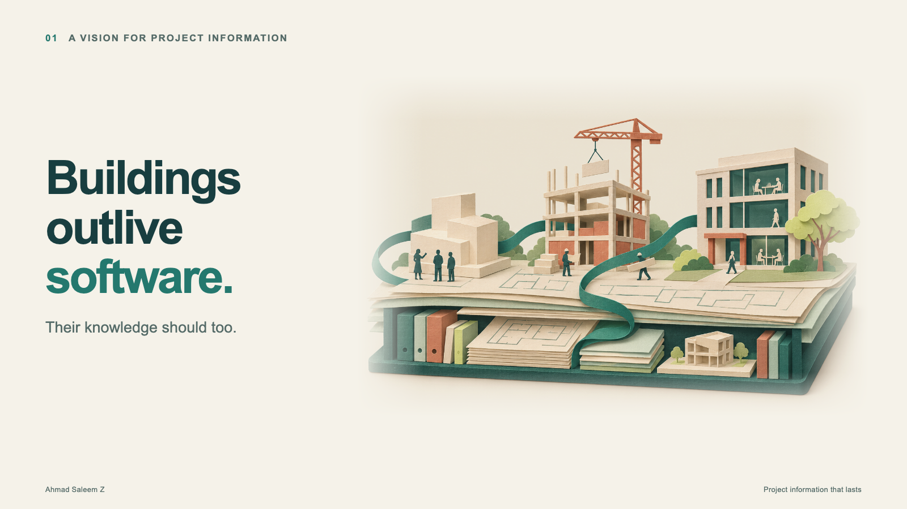
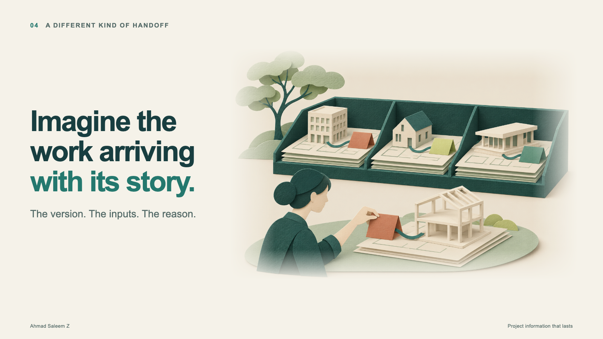
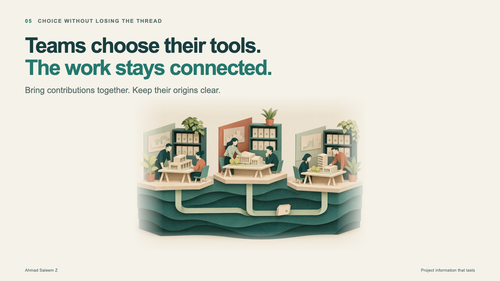
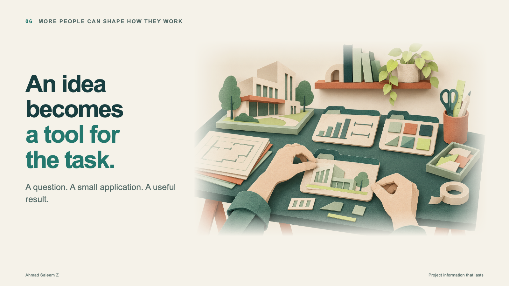
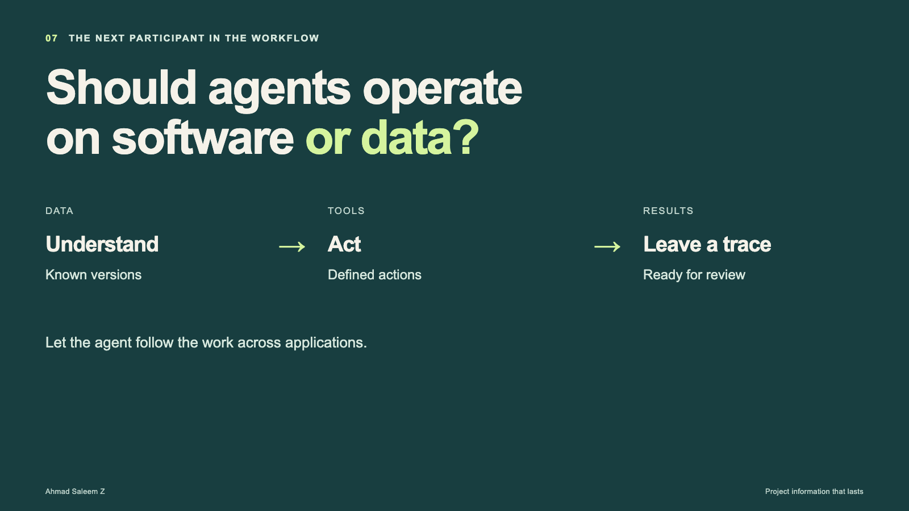
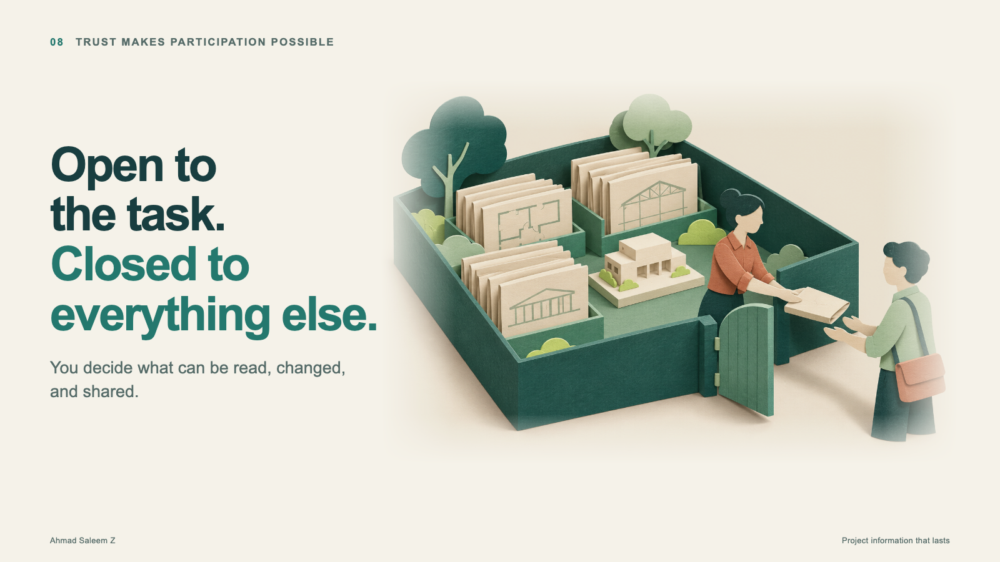
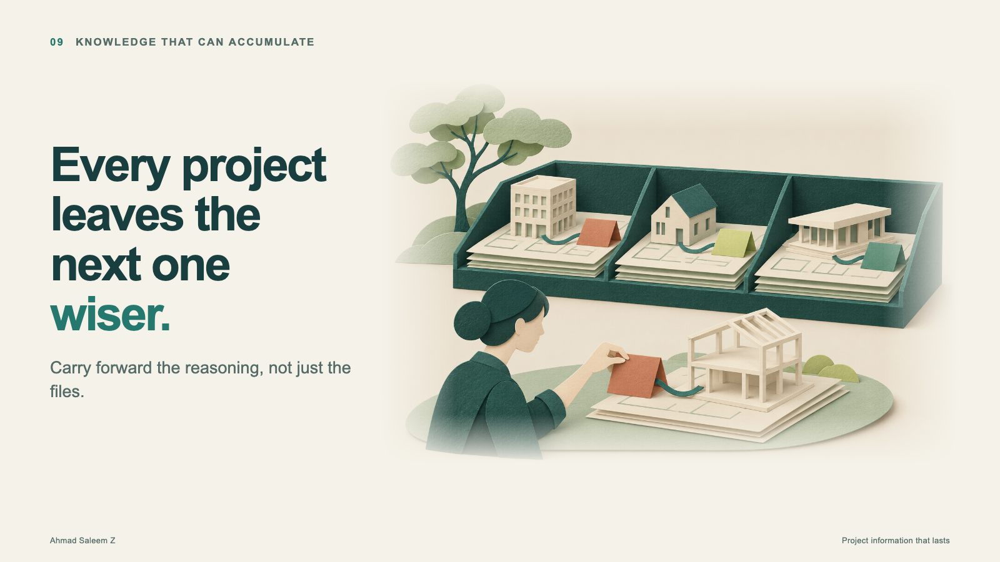
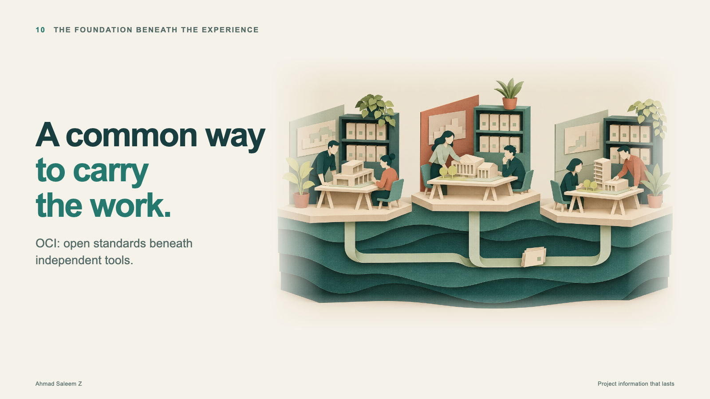
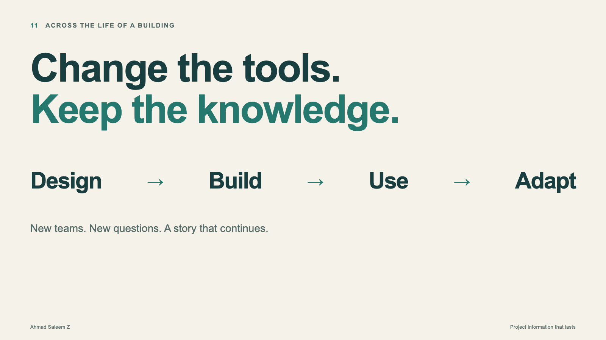
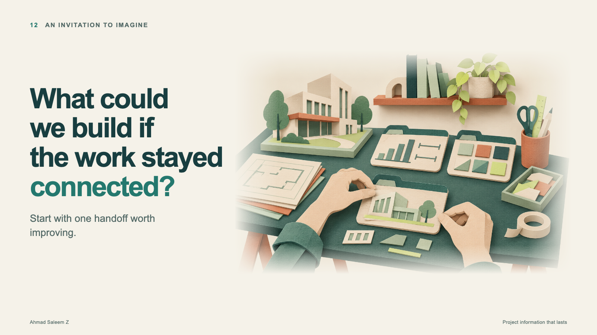

01Buildings outlive software.

02We work together. Our information lives apart.

03Every handoff asks us to start again.

04Imagine the work arriving with its story.

05Teams choose their tools. The work stays connected.

06An idea becomes a tool for the task.

07Should agents operate on software or data?

08Open to the task. Closed to everything else.

09Every project leaves the next one wiser.

10A common way to carry the work.

11Change the tools. Keep the knowledge.
